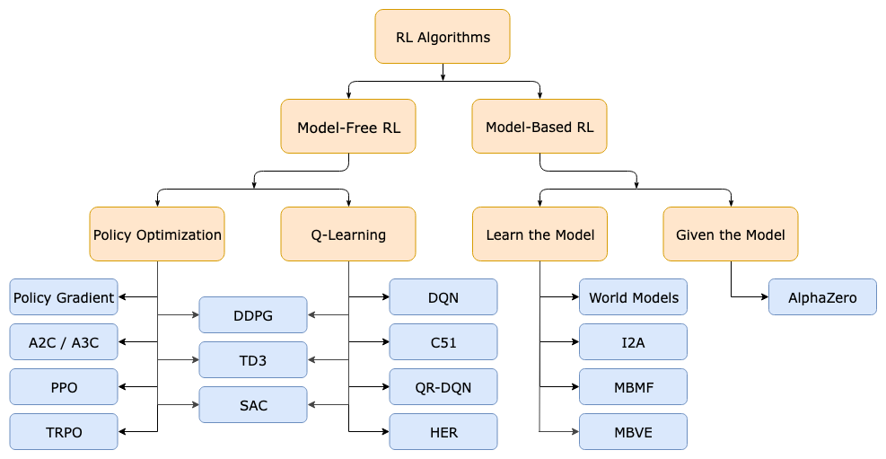

Reinforcement Learning
Table of Contents
1. CS 285: Deep Reinforcement Learning
2. CS 234: Reinforcement Learning - Emma Brunskill
3. Books
From https://qr.ae/prnRfl
In my opinion, the main RL problems are related to:
Information representation: from POMDP to predictive state representation to TD-networks to deep-learning. Inverse RL: how to learn the reward Algorithms
- Off-policy
- Large scale: linear and nonlinear approximations of the value function
- Policy search vs. Q-learning based
Beyond MDP, contextual MDPs Optimal exploration Hierarchical RL Multitask RL and life long learning Multiagent RL Efficient model based RL
I can suggest good papers for each of these problems, but there are few books. This is a list of most of the books I am aware of:
- Sutton & Barto Book: Reinforcement Learning: An Introduction. The classical intuitive intro to the field. I love it.
- The chapter by Bertsekas: Page on mit.edu
- Algorithms for Reinforcement Learning: Csaba Szepesvari. Nice compendium of ready to be implemented algorithms.
- Approximators. Busoniu, Lucian; Robert Babuska ; Bart De Schutter ; Damien Ernst (2010). This is a very practical book that explains some state-of-the-art algorithms (i.e., useful for real world problems) like fitted-Q-iteration and its variations.
- Reinforcement Learning: State-of-the-Art. Vol. 12 of Adaptation, Learning and Optimization. Wiering, M., van Otterlo, M. (Eds.), 2012. Springer, Berlin. In Sutton's words "This book is a valuable resource for students wanting to
go beyond the older textbooks and for researchers wanting to easily catch up with recent developments".
- Optimal Adaptive Control and Differential Games by Reinforcement Learning Principles : Draguna Vrabie, Kyriakos G. Vamvoudakis , Frank L. Lewis. I am not familiar with this one, but I have seen it recommended.
- Markov Decision Processes in Artificial Intelligence, Sigaud O. & Buffet O. editors, ISTE Ld., Wiley and Sons Inc, 2010.
I definitely suggest the books by Sutton and Barto as an excellent intro, the chapter by Bertsekas for getting a solid theoretical background and the book by Busoniu et al. for practical algorithms that can solve some non-toy problems. I also find useful the book by Szepesvari as a quick reference for understanding an comparing algorithms.
There are also several good specialized monographs and surveys on the topic, some of these are:
- "From Bandits to Monte-Carlo Tree Search: The Optimistic Principle Applied to Optimization and Planning" by Remi Munos (New trends on Machine Learning). This monograph covers important nonconvex optimistic optimization methods that can be applied for policy search. Available at https://hal.archives-ouvertes.fr/hal-00747575v5/document
- "Reinforcement Learning in Robotics: A Survey" by J. Kober, J. A. Bagnell and J. Peters. Available at Page on ias.tu-darmstadt.de
- "A Tutorial on Linear Function Approximators for Dynamic Programming and Reinforcement Learning" by A. Geramifard, T. J. Walsh, S. Tllex, G. Chowdhary, N. Roy and J. P. How (Foundations and Trends in Machine Learning). Available at Page on mit.edu
- "A Survey on Policy Search for Robotic" by Newmann and Peters (Foundations and Trends in Machine Learning). Available at Page on ausy.tu-darmstadt.de
- Reinforcement Learning Problem is the AI Problem
- Stable Baseline">Collection of RL Algorithms
- A collection of psuedocode of RL Algorithms with notes on which to use when
- An excellent collection of RL algorithms and their comparision
4. Sutton & Barto
321 : \(\widehat{\nabla{J(\theta)}}\) is a stochastic estimate whose expectation approximates the gradient of the performance measure with respect to its argument.
“Stochastic Estimate” triggered these thoughts:
- We can not know the gradient of the performance, because it may be difficult to measure through out all states, or due to other reasons
- In these cases, we can instead use “Stochastic Estimate” of the desired thing. This estimate has to approximate the true thing in its Expectation. ie. the Expectation (on average value) must be the desired thing.
- Thus when we can’ t compute the thing we require, it may suffice to compute the thing which in ‘expectation’ is the desired thing.
329 Monte Carlo Method have high variance.
As a Monte Carlo Method REINFORCE may be of high variance and thus produce slow learning.
5. Papers
5.1. Imperfect Information Game, Collaboration and Communication
- Learning Multi-agent Implicit Communication Through Actions: A Case Study in Contract Bridge, a Collaborative Imperfect-Information Game. [file]
5.2. Learning Decision Trees With RL
papers/rl/Learning Decision Trees with RL - Xiong.pdf Trains a RNN network using RL, to decide which feature to split the decision tree next. Performs better than greedy strategy.
Because greedy strategies look on immediate infromation gain, where RL can be trained for longterm payoff.
6. Websites
- A (Long) Peek into Reinforcement Learning : https://lilianweng.github.io/posts/2018-02-19-rl-overview/
7. Spinning Up by OpenAI
7.1. Mathematical Background
- Probability and Statistics
- Random Variables
- Bayes' Theorem
- Chain Rule of Probability
- Expected Values
- Standard Deviations
- Importance Sampling
- Multivariate Calculus
- Gradients
- Taylor Series Expansion
7.2. General Knowledge of Deep Learning
[ Links to resources on all these are in the page Spinning Up as a Deep RL Researcher : (saved html) ]
7.2.1. Standard Architectures
- MLP
- Vanilla RNN
- LSTM
- GRU
- conv layers
- resnets
- attention mechanisms
7.2.2. Regularizers
- Weight decay
- Dropout
7.2.3. Normalization
- batch norm
- layer norm
- weight norm
7.2.4. Optimizers
- SGD
- Momentums SGD
- Adam
- others
7.2.5. Reparameterization trick
7.3. Suggested Main Concepts
- Montonic Improvement Theory : papers/rl/Optimizing Expectations Graphs - John Schulman.pdf
7.4. Write Your own Code (in the beginning)
- Which algorithms? You should probably start with vanilla policy gradient (also called REINFORCE), DQN, A2C (the synchronous version of A3C), PPO (the variant with the clipped objective), and DDPG, approximately in that order. The simplest versions of all of these can be written in just a few hundred lines of code (ballpark 250-300), and some of them even less (for example, a no-frills version of VPG can be written in about 80 lines). Write single-threaded code before you try writing parallelized versions of these algorithms. (Do try to parallelize at least one.)
7.5. Taxonomy of RL Algorithms

Figure 1: A Taxonomy of RL Algorithms
8. Debugging RL Algorithms
https://andyljones.com/posts/rl-debugging.html talks about:
- Probe Environments
- Probe Agents
- Logs execessively
- Use really large batch size
- Rescale your rewards
9. Podcast
10. Concepts
10.1. Averagers
10.2. True Gradient Descent
- Is DQN True Gradient Descent? No. They are approximations to it. CS234 - Lecture 6 (t=3253)
- GTD (Gradient Temporal Difference) are true gradient descent
- The first section of chapter on Function Approximation (Sutton & Barto) has few points on this.
10.3. DQN
- Huber Loss on Bellman Error https://youtu.be/gOV8-bC1_KU?t=4756
10.3.1. Replay Buffer
10.3.2. Stable Target
10.3.3. Prioritized Replay Buffer
10.3.4. Double DQN
10.3.5. Duelling DQN
10.3.6. Maximization Bias
- Double DQN
- Stable Target
prevent maximization bias
11. People
11.1. Dibya Gosh
https://scholar.google.com/citations?user=znnl0kwAAAAJ and his blog article: Trouble in High-Dimensional Land